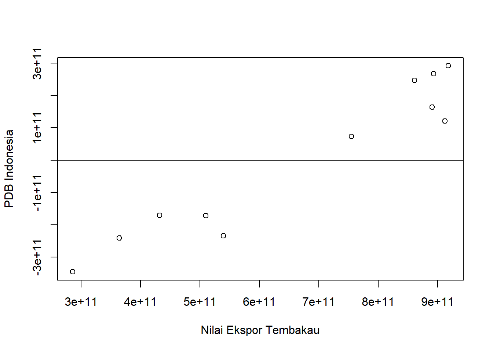
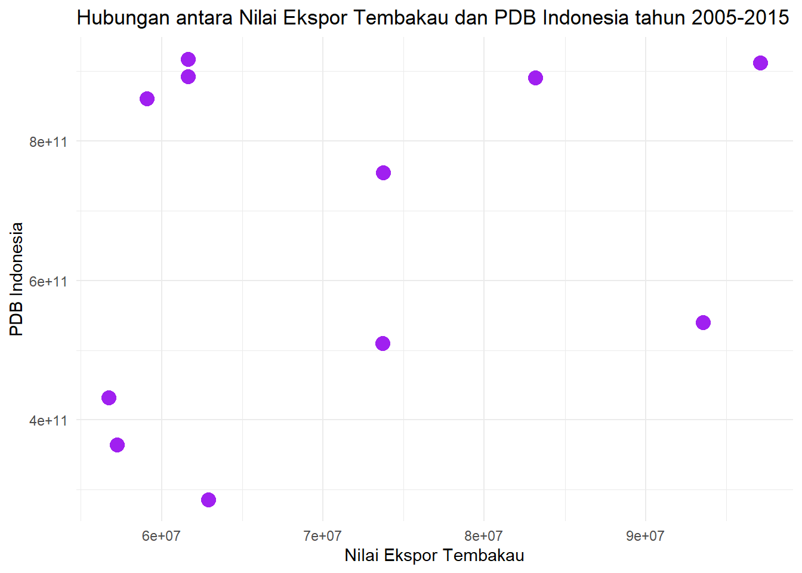

library('tidyverse')
library('readxl')
library('dplyr')Pengaruh Nilai Ekspor Tembakau Indonesia Terhadap PDB Indonesia Tahun 2005-2015
Metode Penelitian Politeknik APP Jakarta

1 Pendahuluan
1.1 Latar belakang
Indonesia adalah salah satu produsen tembakau terbesar di dunia, dan ekspor tembakau memiliki peran penting dalam ekonomi negara. Namun, hubungan antara nilai ekspor tembakau dan PDB Indonesia belum banyak diteliti.
PDB adalah ukuran total nilai barang dan jasa yang diproduksi oleh suatu negara dalam periode tertentu. Ini adalah indikator penting dari kesehatan ekonomi suatu negara. Oleh karena itu, memahami hubungan antara nilai ekspor tembakau dan PDB dapat memberikan wawasan berharga tentang dampak ekonomi dari industri tembakau di Indonesia.
Penelitian ini bertujuan untuk mengetahui hubungan antar variabel dengan menganalisis data historis tentang nilai ekspor tembakau dan PDB Indonesia menggunakan uji regresi. Hasil dari penelitian ini diharapkan dapat membantu pembuat kebijakan dalam membuat keputusan tentang regulasi industri tembakau dan strategi ekonomi lainnya.
1.2 Ruang lingkup
Penulis mengambil objek penelitian yang akan digunakan sebagai variabel penelitian dari Data Badan Pusat Statistik dan Data World Bank. Penelitian ini berfokus pada analisis hubungan antara Nilai Ekspor Tembakau dan PDB Indonesia tahun 2005-2015. Ruang lingkup penelitian ini mencakup data Nilai Ekspor Tembakau Indonesia serta PDB selama sepuluh tahun.Variabel yang penulis gunakan adalah Nilai Ekspor Tembakau Indonesia dan PDB Indonesia. Variabel dependen dalam penelitian ini adalah data PDB Indonesia. Variabel independen adalah Nilai Ekspor Tembakau Indonesia.
1.3 Rumusan masalah
Berdasarkan penjelasan tersebut maka pokok masalah penelitian ini adalah:
- Apakah ada pengaruh signifikan antara Nilai Ekspor Tembakau terhadap PDB Indonesia tahun 2005-2015?
- Bagaimana hubungan antara Nilai Ekspor Tembakau dan PDB Indonesia tahun 2005-2015?
1.4 Tujuan dan manfaat penelitian
Tujuan dari penelitian ini adalah untuk menganalisis hubungan antara nilai ekspor tembakau Indonesia dan Produk Domestik Bruto (PDB) Indonesia. Dengan menggunakan metode uji regresi, penelitian ini bertujuan untuk menentukan sejauh mana nilai ekspor tembakau mempengaruhi PDB.
Adapun manfaat penelitian ini adalah:
- Pemahaman yang Lebih Baik: Hasil penelitian ini dapat memberikan pemahaman yang lebih baik tentang dampak ekonomi dari ekspor tembakau terhadap PDB Indonesia.
- Pembuatan Kebijakan: Hasil penelitian ini dapat digunakan oleh pembuat kebijakan untuk membuat keputusan yang berinformasi tentang regulasi industri tembakau dan strategi ekonomi lainnya.
- Kontribusi Pengetahuan: Penelitian ini dapat memberikan kontribusi kepada literatur akademik dengan memberikan wawasan baru tentang hubungan antara ekspor tembakau dan PDB.
1.5 Package
Packages yang digunakan antara lain sebagai berikut:
── Attaching core tidyverse packages ────────────────────────────────────── tidyverse 2.0.0 ── ✔ dplyr 1.1.4 ✔ readr 2.1.4 ✔ forcats 1.0.0 ✔ stringr 1.5.0 ✔ ggplot2 3.4.4 ✔ tibble 3.2.1 ✔ lubridate 1.9.2 ✔ tidyr 1.3.0 ✔ purrr 1.0.2
2 Studi pustaka
- Ekspor
Ekspor merupakan sistem pedagangan yang dilakukan oleh individu atau badahan usaha dan lembaga yang bertujuan untuk melakukan perdagangan (trading) antar negara. Sedangkan menurut Undang-undang Kepabeanan Pasal 1 ayat 14 bahwa pemerintah meningkatkan cadangan devisa dengan mengembangkan arus ekspor. Maka dari itu pemerintah melakukan himbauan agar setiap barang yang ingin keluar Indonesia atau disebut ekspor agar dimudahkan tanpa melakukan pemeriksaan fisik barang terkecuali untuk ekspor barang (Pabean, 2017).
Kemudian menurut Peraturan Pemerintah Republik Indonesia Nomor 2 tahun 2009, Ekspor adalah kegiatan mengeluarkan barang dari daerah pabean, yang dimaksud dengan daerah pabean adalah wilayah Republik Indonesia yang meliputi wilayah darat, perairan dan ruang udara di atasnya, serta tempat-tempat tertentu di Zona Ekonomi Eksklusif dan landas kontinen dengan memenuhi ketentuan dan peraturan yang berlaku
- Produk Domestik Bruto (PDB)
Produk Domestik Bruto (PDB) adalah perhitungan yang digunakan oleh suatu negara sebagai ukuran utama bagi aktivitas perekonomian nasionalnya, tetapi pada dasarnya GDP/PDB mengukur seluruh volume produksi dari suatu wilayah (negara) secara geografis. Produk Domestik Bruto atau dalam bahasa Inggrisnya Gross Domestic Product (GDP) adalah nilai barang dan jasa dalam suatu negara yang diproduksikan oleh faktor-faktor produksi milik warga negara dan negara asing. (Sukirno, 2013:35).
3 Metode penelitian
3.1 Data
Berikut adalah data yang saya gunakan dalam penelitian ini, data berikut merupakan data Nilai Ekspor Tembakau Indonesia dan PDB Indonesia tahun 2005-2015.
| TAHUN | NILAI EKSPOR TEMBAKAU (USD) | PDB INDONESIA (USD) |
|---|---|---|
| 2005 | 62.896.500 | 285.870.000.000 |
| 2006 | 57.238.400 | 364.570.000.000 |
| 2007 | 56.733.700 | 432.220.000.000 |
| 2008 | 73.683.500 | 510.230.000.000 |
| 2009 | 93.547.300 | 539.580.000.000 |
| 2010 | 73.736.300 | 755.090.000.000 |
| 2011 | 61.632.800 | 892.970.000.000 |
| 2012 | 61.638.800 | 917.870.000.000 |
| 2013 | 97.119.400 | 912.520.000.000 |
| 2014 | 83.165.700 | 890.810.000.000 |
| 2015 | 59.106.100 | 860.850.000.000 |
Sumber data: World Bank dan Badan Pusat Statistik Indonesia


3.2 Import Data
Penelitian ini menggunakan data PDB Indonesia tahun 2005-2015 sebagai Variabel dependen dan Data Nilai Ekspor Tembakau tahun 2005-2015 sebagai Variabel Independen.
#Baca Data
library('readxl')
dat<-read_excel("C:/Users/yusri/Documents/uaszr/data.xlsx")
head(dat)# A tibble: 6 × 3
TAHUN NilaiEkspor PDB
<dbl> <dbl> <dbl>
1 2005 62896500 285870000000
2 2006 57238400 364570000000
3 2007 56733700 432220000000
4 2008 73683500 510230000000
5 2009 93547300 539580000000
6 2010 73736300 7550900000003.3 Plot
#Plot Error
reg1<-lm(PDB~NilaiEkspor,data=dat)
summary(reg1)
Call:
lm(formula = PDB ~ NilaiEkspor, data = dat)
Residuals:
Min 1Q Median 3Q Max
-3.459e+11 -2.034e+11 7.281e+10 2.057e+11 2.919e+11
Coefficients:
Estimate Std. Error t value Pr(>|t|)
(Intercept) 3.389e+11 3.896e+11 0.870 0.407
NilaiEkspor 4.657e+03 5.388e+03 0.864 0.410
Residual standard error: 2.486e+11 on 9 degrees of freedom
Multiple R-squared: 0.07665, Adjusted R-squared: -0.02595
F-statistic: 0.7471 on 1 and 9 DF, p-value: 0.4098dat$u<-resid(reg1)
plot(dat$PDB,dat$u,xlab="Nilai Ekspor Tembakau",ylab="PDB Indonesia")
abline(h=0)

#Plot ggplot
ggplot(data=dat, aes(x = NilaiEkspor, y = PDB)) +
geom_point(color="purple",size=4) +
labs(x = "Nilai Ekspor Tembakau", y = "PDB Indonesia",
title = "Hubungan antara Nilai Ekspor Tembakau dan PDB Indonesia tahun 2005-2015") +
theme_minimal()

3.4 Metode analisis
Metode yang dipilih adalah regresi univariat atau Ordinary Least Square (OLS) dengan 1 variabel independen. Penelitian ini bertujuan untuk mencari pengaruh Nilai Ekspor Tembakau terhadap PDB Indonesia. Spesifikasi yang dilakukan adalah:
\[ y_{t}=\beta_0 + \beta_1 x_t+\mu_t \] di mana \(y_t\) adalah PDB Indonesia dan \(x_t\) adalah Nilai Ekspor Tembakau.
4 Pembahasan
4.1 Pembahasan masalah
Untuk menemukan hubungan antara Nilai Ekspor dan PDB Indonesia di tahun 2005-2015, saya menggunakan OLS Sehingga didapat hasil seperti tabel berikut:
| Variable | Coefficient | Std. error | t-value | Prob(.) |
|---|---|---|---|---|
| Intercept | 3.389e+11 | 3.896e+11 | 0.870 | 0.407 |
| Nilai Ekspor | 4.657e+03 | 5.388e+03 | 0.864 | 0.410 |
| R Squared | 0.07665 | |||
| Adjusted R Squared | -0.02595 | |||
| F Statistic | 0.7471 | |||
| Prob (F-Statistic) | 0.4098 |
Hasil Regresi tersebut dimasukkan ke dalam rumus persamaan sehingga: \[ y_{t}= 3.39 + 4.66X + \mu_t \] Dari persamaan tersebut, kita bisa menyimpulkan bahwa Nilai Ekspor Tembakau sangat berpengaruh terhadap PDB Indonesia. Dari persamaan tersebut kita dapat menyimpulkan bahwa Nilai Ekspor naik 1, Maka PDB akan naik sebesar 4.66.
4.2 Analisis masalah
#Model
reg1<-lm(PDB~NilaiEkspor,data=dat)
#Interpretasi
summary(reg1)
Call:
lm(formula = PDB ~ NilaiEkspor, data = dat)
Residuals:
Min 1Q Median 3Q Max
-3.459e+11 -2.034e+11 7.281e+10 2.057e+11 2.919e+11
Coefficients:
Estimate Std. Error t value Pr(>|t|)
(Intercept) 3.389e+11 3.896e+11 0.870 0.407
NilaiEkspor 4.657e+03 5.388e+03 0.864 0.410
Residual standard error: 2.486e+11 on 9 degrees of freedom
Multiple R-squared: 0.07665, Adjusted R-squared: -0.02595
F-statistic: 0.7471 on 1 and 9 DF, p-value: 0.40985 Kesimpulan
- Koefisien Regresi: Koefisien regresi untuk variabel NilaiEkspor adalah 4.657e+03. Ini berarti bahwa untuk setiap peningkatan satu unit dalam nilai ekspor tembakau, kita dapat mengharapkan peningkatan sebesar 4.66 unit dalam PDB, asumsi variabel lain tetap.
- Signifikansi Statistik: Nilai p untuk variabel NilaiEkspor adalah 0.410, yang lebih besar dari ambang batas umum 0.05. Ini menunjukkan bahwa nilai ekspor tembakau tidak memiliki pengaruh yang signifikan terhadap PDB Indonesia pada tingkat kepercayaan 95%.
- R-squared: Nilai R-squared adalah 0.07665, yang berarti bahwa model ini menjelaskan sekitar 7.7% variasi dalam PDB. Nilai ini cukup rendah, menunjukkan bahwa model ini mungkin tidak menjelaskan variasi dalam PDB dengan baik.
- Residuals: Residuals adalah perbedaan antara nilai yang diamati dan nilai yang diprediksi oleh model. Dalam hal ini, residuals berkisar antara -3.459e+11 dan 2.919e+11, menunjukkan bahwa model ini memiliki beberapa kesalahan prediksi yang cukup besar.
Secara keseluruhan, hasil ini menunjukkan bahwa, berdasarkan data yang digunakan dalam analisis ini, nilai ekspor tembakau tampaknya tidak memiliki pengaruh yang signifikan terhadap PDB Indonesia. Namun, perlu diingat bahwa ini adalah hasil dari satu analisis dan mungkin perlu penelitian lebih lanjut untuk konfirmasi.
6 Referensi
M.S. Amir (2000). Ekspor Impor Teori dan Penerapannya. PPm. Jakarta. Hal 2.
M.S. Amir (2003). Seluk Beluk Perdagangan Luar Negeri. Edisi 13. PPm. Jakarta. Hal 49.